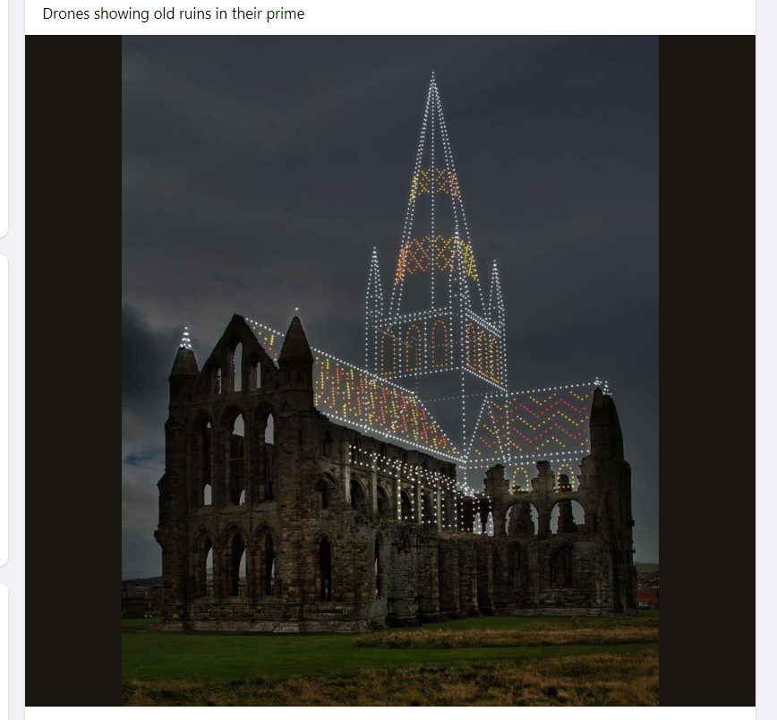

<!-- ************************* -->
#### &nbsp;
## **CSCI 585: Database Systems**
### Dr. Saty Raghavachary, Associate Professor, CS Dept.
<div style="height:1px;border:1px solid #BBBBBB;"> </div>
###**Course links**
### bytes: https://bytes.usc.edu/cs585/m25_dataaawww [FYI, this entire site is created using Markdown (opposite of 'markup'), so the pages should come up nicely (on account of "responsive web design") on every device. Also, the look of the site will change periodically, fyi.. We'll use this site for lecture notes (and "extras").]
### D2L: https://brightspace.usc.edu/d2l/home/211417 (aka 'D2L', or 'Brightspace', or even, 'DEN'). You will submit your homeworks through here, and will access your scores here as well. This is also where you have the WebEx meeting link (under 'Content Browser -> Access to Online Lecture'), and lecture videos (which are recordings of the WebEx sessions).
### Piazza: https://piazza.com/usc/summer2025/csci585 (https://piazza.com/class/mcn1hs8i57i48g/) -- this is a 'discussion' site, for you to post questions related to HWs and lecture material, and post related answers/comments. Instead of mailing me or the TAs or the graders, it's oftentimes better to post a note on Piazza instead, on account of more 'eyeballs' being able to look at them, and us not having to answer same/similar questions repeatedly.
<div style="height:1px;border:1px solid #BBBBBB;"> </div>
<!-- ********************************************************************************************************** -->
<br>
<br>
<br>
<!-- ********************************************************************************************************** -->
<div style="height:1px;border:1px solid #BBBBBB;"> </div>
###**Blurb**
####What this course is about - here is the <a target="_blank" href="https://classes.usc.edu/term/20252/catalogue/school/ENGV/program/CSCI">course catalog</a> which lists 'CSCI 585 - Database Systems'.
###**Overview**
#### This course covers the essential concepts, principles, techniques, and mechanisms for the design, analysis, use, and implementation of computerized database systems. Key information management concepts and techniques are examined: information modeling and representation; information interfaces - access, query, and manipulation, implementation structures, and issues of distribution.
####The database and information management system technology examined in this course represents the state-of-the-art, including traditional approaches as well as recent research developments. By providing a balanced view of "theory" and "practice," the course should allow the student to understand, evaluate, and utilize practical database and information management systems.
####The course is intended to provide a basic understanding of the issues and problems involved in database systems, knowledge of currently practical techniques for satisfying the needs of such a system, and an indication of the current research approaches that are likely to provide a basis for tomorrow's solutions.
####In a single word, this course is about - **data** :) Another single word: 'fun'!!
<div style="height:1px;border:1px solid #BBBBBB;"> </div>
###**Pre-requisites**
#### As stated in the university catalog, a passing grade in CSCI485 or equivalent, or departmental permission, is required to register for this class. Knowledge of relational databases, SQL, relational algebra and database design is desired [but not essential].
####Note that this course involves several programming assignments/projects, for which some programming ability might be required. Assignments might call for the use of [the basics of] JS, Python, R, etc.
<div style="height:1px;border:1px solid #BBBBBB;"> </div>
##**People**
###**Professor**
####Dr. Saty Raghavachary
####Office hours (in GCS 302D): by appt.
####Contact: saty@usc.edu, satychary@gmail.com (I'm also on Facebook, Linkedin and Twitter/X) - several ways to be in touch!
####I work in, teach, write about, lecture, consult, code and do informal research on computer graphics (CG), data science/ML, and <a href="https://link.springer.com/search?dc.creator=Saty%20Raghavachary">'AGI'.</a> [Here](https://viterbi.usc.edu/directory/faculty/Raghavachary/Saty) is my brief bio.
###**TAs+CPs**
####**TAs:**
####Bita Azarijoo: azarijoo@usc.edu
####Yuliang Cai: caiyulia@usc.edu
####Satyaki Das: satyakid@usc.edu [Co-Lead]
####Tooraj Helmi: thelmi@usc.edu
####Zhehui Huang: zhehuihu@usc.edu
####Raja Kumar: kumarraj@usc.edu
####Zhuoyu Shi: zhuoyush@usc.edu
####Wenbin Teng: wenbinte@usc.edu
####Sulyab Valapu: thottung@usc.edu
####Kexin Zheng: kexinzhe@usc.edu
####**Graders/CPs:**
####TBA [possibly none!!]
###**In addition to communicating with me, do make it a point to get to know your TAs/CPs/graders!** They are all quite knowledgeable and can help you.. Please get in touch with them, to make a 'live' or Zoom (etc) appointment, meet with them!
<div style="height:1px;border:1px solid #BBBBBB;"> </div>
##**Policies**
###**No talking!**
####BE MINDFUL (AWARE) of others, who have paid a LOT of money (like you have, too), and come to the lecture to listen to ME, not YOU. It's disrespectful, gross, childish, indecent... to talk, when the lecture is in progress. PLEASE BE QUIET.
###**Attendance**
####Attendance is mandatory, for in-class as well as online (excluding DEN) students. Since it's impractical to do a full 'roll call', I will use https://bytes.usc.edu/~saty/tools/xem/run.html?x=att-m25-5-8-5- to pick out names (email addresses, actually) at random - if your name comes up, and if you don't respond right away, **you will lose 5 points (off your cumulative total for the course)** EACH time this happens. If you have a valid+pre-approved reason to be out/away, you most certainly can, it's not a heartless, zero-exceptions policy!
###**Students with disabilities**
####Any student requesting academic accommodations based on a disability is required to register with OSAS [https://osas.usc.edu/] each semester. A letter of verification for approved accommodations can be obtained from OSAS. Please be sure the letter is delivered to me as early in the semester as possible.
###**Academic integrity**
####USC seeks to maintain an optimal learning environment. General principles of academic honesty include the concept of respect for the intellectual property of others, the expectation that individual work will be submitted unless otherwise allowed by an instructor, and the obligations both to **protect one's own academic work from misuse by others as well as to avoid using another's work as one's own**. All students are expected to understand and abide by these principles.
####Students will be referred to the OAI (https://academicintegrity.usc.edu/) for further review, should there be any suspicion of academic dishonesty.
####Here is my policy in plain language: if I come to find out that your submission resembles another submission (from a fellow student in your section or another section, a roommate's submission from an earlier class, submission from someone else who took the class earlier, code found on GitHub etc..), **I WILL REPORT YOU TO SJACS, AND GIVE YOU A 0 FOR YOUR SUBMISSION**. You can then deal with SJACS to convince them if you need to, that you did not cheat. Please take this **very seriously**, and BELIEVE it - if you decide to flout the rules, you do so at your own risk.
####Translation/bottom line: **DO NOT CHEAT under ANY circumstance(s)!!**
###**Emergency preparedness/course continuity in a crisis**
####In case of a declared emergency if travel to campus is not feasible, USC executive leadership will announce an electronic way for instructors to teach students in their residence halls or homes using a combination of our course site, D2L, teleconferencing, and other technologies.
<div style="height:1px;border:1px solid #BBBBBB;"> </div>
<!-- ********************************** -->